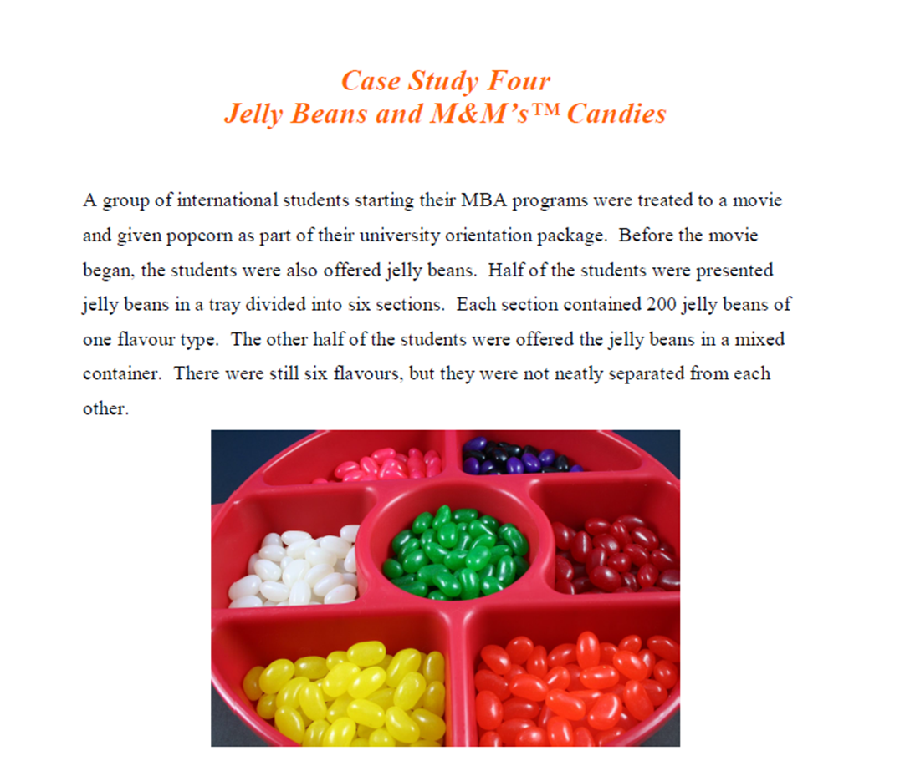
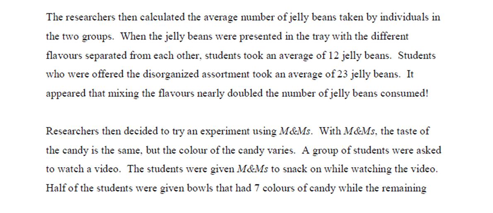
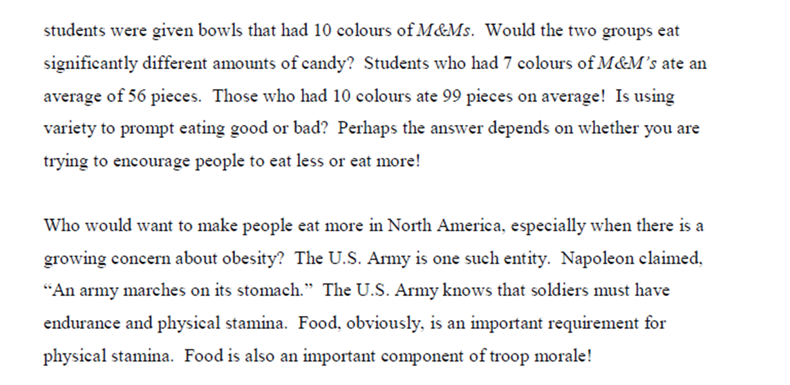
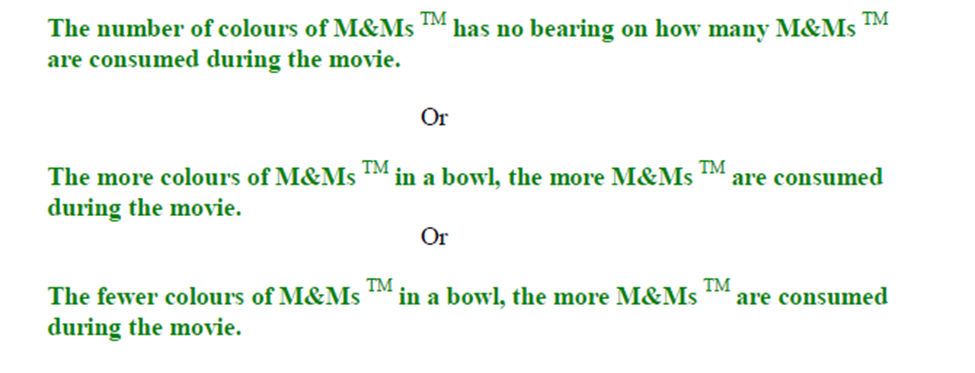
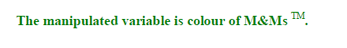
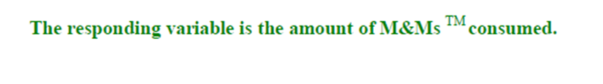
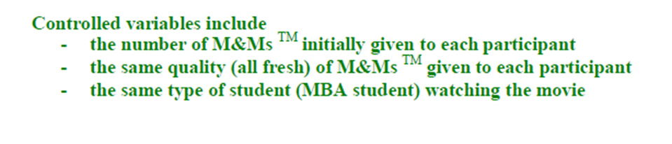

Sensory Specific Satiety
Joe walks into an Italian restaurant and is greeted with smells of roasting garlic and oregano. He smiles and his stomach rumbles in anticipation of his meal. After 10 minutes he does not really notice the smells of garlic and oregano anymore. Joe's sense of smell (olfactory sense) has been numbed or sated. In fact, if any sense continually experiences the same stimulus, it will become sated. This phenomenon is called sensory specific satiety. In this case, Joe's sense of smell has become so used to the aromas of garlic and oregano that he no longer notices them.
Sensory specific satiety also affects the sense of taste (gustatory sense). This is why the first bite of our favourite food is always the tastiest bite. After 25 bites, we are often tired of our favourite food and stop eating. If we are given a new food item, however, we may begin to eat again, even if we are full. This is why people often eat more when a variety is available. Going to a 300 item buffet palace when you are trying to eat less probably isn't a good idea!
Case Study Four discusses how variety plays a role in how much we eat, specifically variety in taste and variety in colour with no change in taste.
Case Study 4: Jelly Beans and M&Ms TM Candies



Self-Check Questions Relating to the M&MsTM Experiment:
1. What is a possible hypothesis?

2. What is the manipulated variable?

3. What is the responding variable?

4. What are the controlled variables?

sated: having experienced an overabundance of something to the point of not noticing the stimulus any more.
sensory specific satiety: a condition where one of five senses becomes overstimulated and no longer registers the stimulus as new
this link opens in a new window/tab)